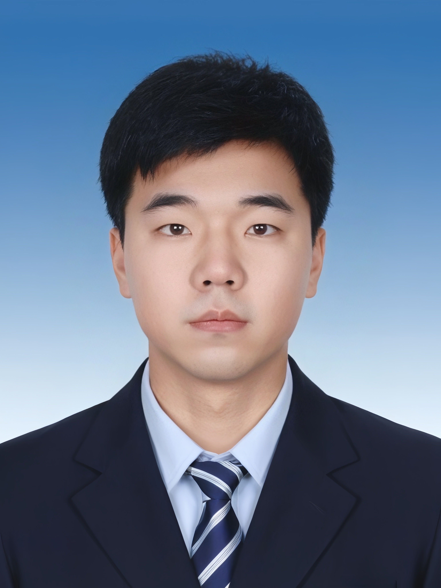

Geo-RL：长文本图像描述的集合级强化学习
参与方法建模、奖励设计与实验验证。Geo-RL 用 CLIP 质量加权的 DPP 衡量一组描述的语义覆盖度，并用留一边际奖励把集合收益分配给单条描述。下列结果来自 DeCapBench，对比 LLaVA-1.5 7B MLE。
- 语义体积（SVS）
- 2.20 → 3.55
- Distinct-2
- 0.66 → 0.84
- CLIPScore
- 0.74 → 0.81
- 物体幻觉率
- 8.3% → 7.1%
北京航空航天大学 · 博士研究生
大模型 Agent 后训练与多模态强化学习
我研究如何为 Coding Agent 的中间状态估计成功概率，并用集合级奖励提升图像描述的覆盖度。曾任北京风起时域科技合伙人及 AI 团队负责人，主导智能运维 Agent 的架构、训练和生产交付。
北京 · 大模型 Agent 后训练算法实习 · 每周 5 天，可实习 6 个月

参与方法建模、奖励设计与实验验证。Geo-RL 用 CLIP 质量加权的 DPP 衡量一组描述的语义覆盖度，并用留一边际奖励把集合收益分配给单条描述。下列结果来自 DeCapBench，对比 LLaVA-1.5 7B MLE。
独立完成算法、数据、实验系统与论文。以任务最终成败监督中间状态的成功概率估计，用于 Best-of-N 选择和推理早停。信息预算对齐实验中，选择性能接近 verifier oracle 的 0.931，无需额外执行测试。
主导 Planner–Executor、混合 RAG、工具调用与失败样本回流。用 TRL 和 vLLM 对 Qwen3-8B 进行 LoRA 与 GRPO 训练，通过字段级奖励和样本筛选将槽位提取指标从 0.914 提升至 0.961。
学生一作
第一作者 · 在审
第一作者 · 已录用
第一作者
合著 · QIARL 的扩展工作
负责多智能体强化学习项目的仿真环境、专家数据采集与训练评测。
研究 QIARL 状态抽象，开发分布式 learner–actor 架构并迁移至 Ray / RLlib，并行采样吞吐较单机提升约一个数量级。
自动化科学与电气工程学院 · 博士在读
软件学院 · 硕士 · 北京市优秀毕业生、北航优秀研究生
光电学院 · 本科 · 优秀毕业论文
第一轮 82 队中第 7，高校第一
北京市积分 1650